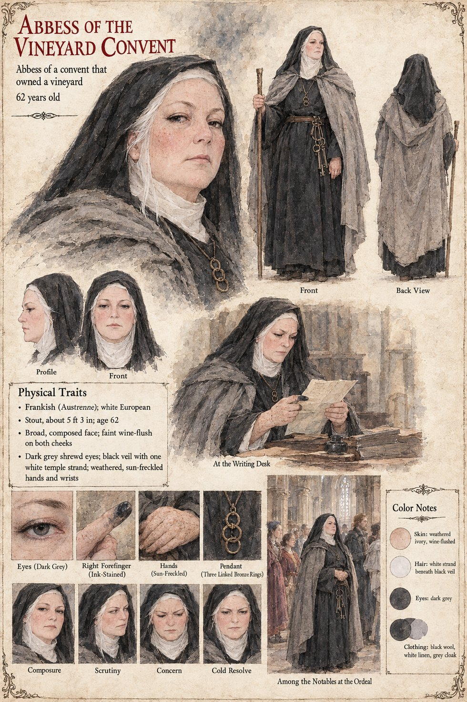

Abbess of the Vineyard Convent
Abbess of a convent that owned a vineyard · 62 years old by her sheet
The abbess of a convent that owns a vineyard, one of the buyers of Sigebert Marl's information: by the time he decides that the Guild is about to become very cheap he has already sold information to three masters, a duke's steward and her. Neither the sheet nor the pages already written say what she bought or what she did with it. The sheet draws her as a stout, composed woman of sixty-two, shrewd-eyed, at a writing desk with an inkwell and a pile of books, reading a letter with an ink-stained right forefinger; and, in its large closing scene, standing among the notables at the Ordeal in the cathedral nave with a ring of keys at her belt.
Her expression panels run Composure, Scrutiny, Concern and Cold Resolve, and her pendant, drawn in close-up, is three linked bronze rings. Written from the sheet, from what the other Case 4181 pages already say, and from the character notes in the case's publication-prep file; the manuscript itself was not to hand. Her age of 62, Frankish origin in Austrenne, stout build of about 5 ft 3 in, broad composed face with a faint wine-flush on both cheeks, dark grey eyes, black veil with one white temple strand, weathered sun-freckled hands and grey cloak over black wool are the sheet's own.